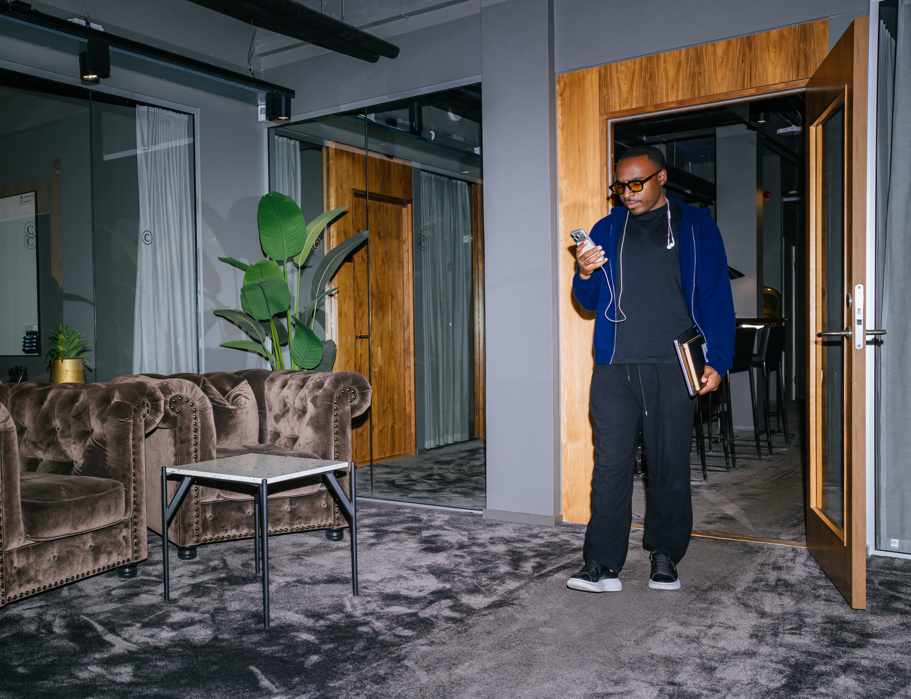

Klubb.
Alla spelare behöver inte samma sak.
En prestationsmiljö byggs för laget. Individen kan fortfarande behöva något mer riktat.
Difference Consulting aktiveras när en individ behöver förändra, befästa eller bygga vidare sitt självledarskap.
Extern från organisationen. Nära individens verklighet.

Funktionen
En extern specialist för individens självledarskap.
Difference Consulting kompletterar den befintliga prestationsmiljön med en individuell process.
Arbetet riktas mot hur spelaren leder sig själv när prestationen ställer krav.
I förberedelsen. I reaktionen. I återgången. I standarden.
Målet är inte större beroende av vägledning. Målet är större förmåga att leda sig själv.
När är Difference relevant?
När individen behöver något mer riktat.
Lagmiljön behöver bära helheten. Den individuella processen kan gå djupare där en specifik spelare behöver det.
Det behöver inte börja med att något är fel.
När kvaliteten finns – men inte alltid kommer fram.
Självtvivel · Övertänkande · Frustration · Bevisjakt
Spelaren kan veta vad som behöver göras och ändå inte alltid få tillgång till sin kapacitet när situationen kräver det. Arbetet riktas mot det som står mellan kapacitet och handling.
När spelarens verklighet förändras.
Roll · Speltid · Skada · Ny miljö · Ökad konkurrens · Ovisshet
Det yttre förändras – och kan börja påverka det inre. Arbetet riktas mot det spelaren fortfarande kan se, leda och bära själv.
När det går bra – och det som fungerar ska bära vidare.
Speltid · Prestation · Förtroende · Genombrott · Större ansvar
Nästa steg behöver inte vara att leta efter mer. Det kan vara att förstå, befästa och fortsätta bygga det som redan fungerar.
När spelaren behöver börja bära mer själv.
Större ansvar ställer andra krav. Att kunna förbereda sig, reglera sig, välja, återgå och bära sin standard – med mindre beroende av yttre riktning.
Förändra.
Befästa.
Bygga vidare.
Processen formas efter människan och den verklighet spelaren står i.
Processen
Individuell nog för människan.
Tydlig nog att följa.
Difference Consulting går inte in med samma lösning för varje spelare. Processen formas efter individens verklighet och det som behöver utvecklas.
- Riktning
- Träningsfält
- Beteende
- Kvitto
- Nästa rätta steg
Arbetet ska inte bara genomföras. Det ska gå att följa.
Förtroende
En individuell process kräver utrymme för öppenhet. Därför tydliggörs från start vad som kan återkopplas och vad som stannar i den individuella processen.
Relevant uppföljning. Tydliga gränser.
Vägen in
När behovet finns ska nästa steg vara enkelt.
01 · Behov
Ett individuellt behov blir tydligt.
02 · Möte
Difference Consulting möter individen och skapar en bild av nuläget.
03 · Start
Riktningen sätts. Processen börjar.
04 · Uppföljning
Det som blir synligt följs över tid.
En individ.
Ett tydligt behov.
En riktad process.